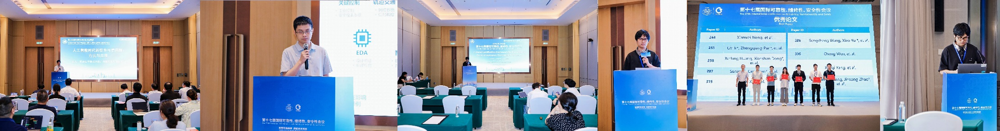
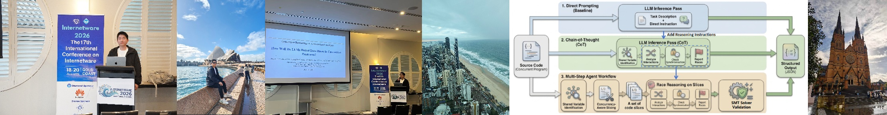

2026年11月12日至15日，第26届 IEEE 国际数据挖掘会议（ICDM 2026）在辽宁沈阳举行。11月14日下午，西安电子科技大学广州研究院未来软件新技术实验室硕士生于康朔在 Blue Sky 论坛报告了课题组的两项研究。两篇论文均来自“面向复杂系统级软件的智能理解与透视分析”项目，分别探讨软件持续演化时，开发者如何保留关键设计知识，以及如何判断已有文档是否仍与代码一致。
第一篇论文《Keeping Software Knowledge Alive: Toward Shared Semantic Views for Human-Agent Software Evolution》由文成老师担任第一作者。软件经过多轮修改后，一项约束源于哪条需求、一次设计调整影响了哪些模块，往往很难仅从当前代码中看出来。论文提出供开发者与软件智能体共同使用的“共享语义视图”，将系统运行流程、关键约束及其变更历史关联起来，使双方在修改软件时都能追溯原有的设计依据。第二篇论文《Mining Evidence-Linked Claims from Software Repositories for Contradiction-Aware Knowledge Diagnosis》由于康朔同学担任第一作者。该研究关注代码已经更新、文档却仍沿用旧说法的问题。论文提出从软件仓库中提取可以核查的陈述，为每条陈述关联支持证据和反证，并记录判断的置信度及后续核查建议。这样，当文档与代码出现矛盾时，开发者可以追溯到具体材料，判断哪一处需要更新。
2026年11月6日至8日，2026 CCF中国软件大会（CCF ChinaSoft）在天津举行。西安电子科技大学广州研究院未来软件新技术实验室五位同学在两项竞赛中获奖。在Rust软件原型开发竞赛中，张雨晨同学获一等奖，张祥昀、郑小春同学获三等奖。在“仓颉杯”智能编程大赛中，王明煜、鲁文健同学获创新原型赛道二等奖。
在秦胜潮教授和文成老师指导下，张雨晨同学凭借作品《VerusForge：面向Rust程序的自动证明合成与形式化验证系统》获得一等奖。要验证一段Rust程序是否满足给定的规约，开发者通常需要手工编写证明。VerusForge将大语言模型与形式化验证工具结合，由模型生成候选证明，再由验证器检查证明能否成立，从而减少手工编写证明的工作量。
王明煜、鲁文健同学在于斌副教授和文成老师指导下，完成了“仓颉杯”获奖作品《面向Linux驱动的智能化虚拟设备建模与漏洞挖掘平台》。Linux驱动测试往往依赖特定硬件，一些异常状态也很难在真实设备上复现。针对这一问题，团队利用大语言模型辅助构建虚拟设备模型，并结合定向模糊测试，让测试人员能够在虚拟环境中检查驱动在不同设备状态下的行为。
本届大会由中国计算机学会主办，设有60余场论坛与活动，注册人数超过3000人。西安电子科技大学计算机科学与技术学院组织20余名师生参会。李青山教授共同组织并主持了“关键行业软件与AI融合发展”论坛。田聪教授参与组织“软件形式化工程方法”学术论坛，并主持“形式化方法与应用”专刊论坛。马智副教授共同组织“顶会顶刊”论坛，曲南江博士后在“顶会顶刊”和“软件形式化工程方法”两个论坛分享了大规模数字电路并行验证的研究成果。
2026年10月15日至18日，第二十五届中国计算语言学大会（CCL 2026）在湖北宜昌举行。西安电子科技大学广州研究院未来软件新技术实验室文成、胡俊杰、吴文杰、于斌与秦胜潮合作完成的论文《Verifier-Constrained Neural-Symbolic Synthesis of Formal Program Specifications》获评大会“亮点论文”。10月17日下午，吴文杰同学代表课题组作口头报告，介绍了如何结合大语言模型与形式化验证，自动生成描述程序预期行为的规约。18日下午，他在系统展示环节演示了课题组研发的 AutoSpec+ 工具。该工具利用大语言模型生成函数契约、循环不变式等候选规约，再由验证器逐项检查，并根据反馈修正规约。
2026年10月12日至16日，第41届 IEEE/ACM 国际自动化软件工程会议（ASE 2026）在德国慕尼黑举行。西安电子科技大学广州研究院未来软件新技术实验室五位师生分别在会上作报告，介绍了课题组在软件需求形式化、程序验证和软件缺陷检测方面的研究成果。
在工具与数据集分会场，课题组展示了三项工作。文成老师与柯汶君同学等共同研发的 TLCrafter 将自然语言需求逐层分解，转换为时序逻辑规约。胡俊杰同学介绍了 ACSLBench，该数据集包含超过50万个经过形式化验证的 C 程序样本，并设置了495项涉及函数调用的任务，用于评估大模型能否为相互调用的函数写出正确的规约。张雨晨同学介绍了 VerusSeek，展示了如何通过检索相关证明，帮助大模型为 Rust 程序生成可由验证器检查的证明。在工业展示分会场，王少豪同学以 Linux 内核、MySQL 等项目中的58个真实并发缺陷为例，分析了为什么一段在 x86 上运行正常的代码，换到其他处理器架构后可能暴露出访问顺序问题。课题组的另一项研究比较了内存错误检测工具 AddressSanitizer 及其七种优化方案，考察了降低运行时间和内存开销会如何影响错误检测能力。

2026年7月14日至17日，第十七届国际可靠性维修性安全性会议（ICRMS 2026）在广州黄埔举行。西安电子科技大学广州研究院未来软件新技术实验室苏杰老师、李健衡同学参加会议并分别作学术报告，介绍了课题组在航天软件验证与可信复用方面的研究工作。课题组的两项研究聚焦航天软件构件（软件 IP）复用中的两个具体问题。一项研究提出可移植的验证框架 Verihar，使同一软件构件的验证工作可以在不同验证工具之间迁移。该成果以《Verihar: A Portable Verification Harness Framework for Aerospace Software IP Across Heterogeneous Backends》为题发表，获本届大会最佳论文奖。另一项研究面向航天嵌入式软件 IP 提出分级认证框架，为判断已有软件构件能否在新任务中可靠复用提供依据。

2026年7月18日至20日，第十七届网构软件国际会议（Internetware 2026）在澳大利亚黄金海岸举行，西安电子科技大学广州研究院文成副教授赴会。课题组论文《Generative Reasoning vs. Conventional Analysis: How Well Do LLMs Detect Data Races in Concurrent Programs?》获本届会议录用。
当多个线程在缺少必要同步的情况下读写同一块内存时，程序可能出现难以复现的数据竞争。大语言模型能否通过阅读代码发现这类问题？课题组在标准基准、Linux 内核验证任务和真实软件项目中评估了多种大模型，覆盖超过3,950个并发程序文件、逾140万行代码，并与 TSan、OpenRace、SVF 等传统分析工具进行了比较。在本研究的评测条件下，采用多阶段分析流程的大模型智能体无需编译或运行程序，即取得了各参评方法中最高的 F1 分数。与传统工具相比，它报告的数据竞争有更高比例得到确认，同时保持了相近的召回率。进一步分析发现，两类方法容易在不同的代码模式上产生误报，为后续结合大模型推理与传统程序分析提供了线索。
2026年5月24日，CCF形式化方法专委会青年学术论坛“形式化方法与AI的双向赋能”专题研讨会在浙江大学紫金港校区举行。在下午的报告环节，西安电子科技大学广州研究院文成副教授作了题为《超越基准测试：大模型驱动程序规约合成的挑战与实践》的报告。报告围绕如何利用大语言模型生成描述程序预期行为的形式化规约，介绍了课题组的研究实践，并讨论了基准测试之外仍需关注的问题。本次研讨会由中国计算机学会主办，CCF形式化方法专委会与浙江大学共同承办。来自国内外的8位报告人分别从人工智能辅助形式化验证、运用形式化方法保障人工智能系统可信性等角度分享了研究进展。
由中国计算机学会（CCF）主办，CCF 深圳及深圳市计算机学会（SZCCF）承办的“第三届岭南论坛暨大湾区计算机大会”即将启幕，本届大会聚焦具身智能、大模型赋能与量子科技三大前沿方向。大会设立“新型计算与大模型时代的安全可信软件技术论坛”，聚焦新型计算环境下的软件安全与可信技术变革，围绕大模型驱动的软件安全与验证、量子软件算法与编程框架中的可信性保障、智能化软件验证与形式化分析、以及量子计算驱动的安全优化与可信执行机制等核心方向，致力于搭建一个高端、开放的跨学科学术交流平台。本论坛由来自西安电子科技大学、深圳大学等高校的优秀团队共同组织，汇聚包括上海交通大学、香港中文大学、浙江大学、哈尔滨工业大学(深圳)等国内外顶尖科研机构的资深专家与ACM/IEEE Fellow 等领军人才。通过深入探讨新型计算技术与软件安全可信体系的融合创新，论坛旨在推动安全可信软件关键理论的原始创新、共性技术的系统性突破以及在重点行业与关键领域的工程化落地，为构建面向未来的安全、可信、可验证的软件生态贡献中国智慧。
香港中文大学计算机科学与工程学系博士生刘茂丽，师从国际著名学者John c.S.Lui教授，为我们带来了一场精彩绝伦的报告。当前大语言模型(LLM)能够生成风格多样的回复，但如何在在线、多设备、个性化的场景中高效选出最契合用户偏好的回复，仍然是一个关键难题。本报告将介绍一种名为MACO的分布式多智能体对话式在线学习框架。MACO 将“对话即智能”作为核心理念，引入基于关键词的自适应对话机制:系统不再被动等待用户反馈，而是根据当前偏好估计的不确定性，主动发起少量关键词对话，减少无效交互，加速偏好学习。MACO为个性化大模型的在线部署提供了一种高效且易扩展的方案。
国家自然科学基金重大项目“嵌入式软件智能合成基础理论与方法”中期答辩在北京控制工程研究所召开，圆满完成各项任务目标。
田聪老师应邀在 “大模型与形式化方法”论坛 做主题报告，分享了我们在跨领域融合研究中的最新思考。文成老师分别在 “复杂智能系统仿真测试”论坛 与 “形式化方法与应用”论坛 做报告，展示了课题组在系统验证与智能化方法的扎实进展。林志伟同学 在 “仓颉编程语言大赛” 中表现优异，斩获全国三等奖（全国仅5位获奖者），充分展现了扎实的编程功底与创新思维！胡俊杰同学首次参与 “定理证明大赛”，在与顶尖选手的切磋中积累了宝贵经验，为后续研究注入了新动力。每一次出发都是成长，每一次登台都是积淀。感谢中国软件大会提供的交流平台，也感谢课题组每位成员的辛勤付出与合作共进！未来，我们将继续深耕软件领域核心方法与技术，探索更多可能。
近日，西安电子科技大学计算机科学与技术学院与广州研究院计算理论与技术研究所ICTT团队的研究成果《Bridging Natural Language and Formal Specification—Automated Translation of Software Requirements to LTL via Hierarchical Semantics Decomposition Using LLMs》在软件工程和形式化方法领域取得重要突破，论文被国际国际软件工程领域顶级会议——第40届IEEE/ACM国际自动化软件工程会议（ASE 2025）接收，并荣获ACM SIGSOFT杰出论文奖（Distinguished Paper Award）。该奖项是国际软件工程领域最具影响力的学术荣誉之一，用以表彰在理论创新与工程实践方面均有突出贡献的研究工作。论文指导专家为杨孟飞研究员，通讯作者为田聪教授，第一作者为计科院青年教师马智，第二作者为广研院青年教师文成。
2025年中国计算机学会人工智能会议（CCFAI 2025）在昆明举行。来自人工智能领域的1200余位专家、学者和研究人员参会，交流人工智能领域最新研究成果、创新思想，推动产学研协同创新，助力提高国内人工智能领域研究水平。
5月23日，YEF2025继续在珠海&横琴举行，本届大会共举办了7场特邀报告、1场思想秀、2场大会论坛、22场专题论坛以及优秀大学生学术秀等其他特色活动，内容涵盖人工智能、大模型、具身智能、芯片等前沿方向。
近期，国家自然科学基金重大项目“嵌入式软件智能合成基础理论与方法”2025年上半年总结暨学术交流会议在重庆缙云山举行。会议聚焦杨孟飞主持的国家自然科学基金重大项目 “嵌入式软件智能合成基础理论与方法”，围绕项目中的需求描述语言、软件IP表示模型、软件智能合成等方面展开交流与探讨。相关负责人汇报了各子课题的前期工作进展，并明确了下一步工作内容和方向。
11月17日下午，2024 CCF中国软件大会（2024 CCF ChinaSoft）在千年古都西安落幕。会议期间，来自国内外软件相关领域内学者、师生与从业者共2400余人，围绕“智能软件创新赋能新质生产力发展”主题进行交流探讨、思维碰撞。
2024年8月1日，华为可信领域科学家委员会、华为软件领域科学家委员会、华为可信理论、技术与工程实验室和华为费马实验室在贵安云上屯举办了为期两天的2024 华为形式化方法研讨会。本次研讨会聚焦“智能时代下的形式化验证技术”，探讨智能时代下形式化方法的发展前景及其应用。研讨会邀请了国内外的30余位形式化方法领域的顶尖专家和学者，专家学者们齐聚一堂，围绕形式化前沿技术、LLM/AI的形式化验证方法以及利用LLM/AI进行形式化验证等议题展开深入交流。
The 18th Theoretical Aspects of Software Engineering Conference (TASE 2024) will be held in Guiyang City, China on July 29 - August 1, 2024. TASE 2024 aims to provide a forum for people from academia and industry to communicate their latest results on innovative advances in software engineering. Modern society is increasingly dependent on software systems that are becoming larger and more complex. This poses new challenges to the various aspects of software engineering, for instance, software dependability in trusted computing, interaction with physical components in cyber physical systems, quality assurance in AI-embedded systems, distribution in cloud computing applications, security and privacy in general. Hence, new concepts and methodologies are required to enhance the development of software engineering from theoretical aspects.
文成对所接收论文《Enchanting Program Specification Synthesis by Large Language Models using Static Analysis and Program Verification》（中文：在静态分析和程序验证的指导下利用大语言模型辅助程序规约的合成）做线上报告。。
第46届国际软件工程会议（IEEE/ACM International Conference on Software Engineering，ICSE 2024）于2024年04月14日至20日在葡萄牙里斯本召开。该会议是软件工程领域公认的权威国际学术顶级会议，也是中国计算机学会（CCF）推荐的A类国际学术会议。我院高可信软件工程技术实验室的教师文成和苏杰参加了此次会议并作了报告。
近期，国家自然科学基金重大项目“嵌入式软件智能合成基础理论与方法”2023年度总结暨学术交流会议在珠海举行。会议聚焦杨孟飞主持的国家自然科学基金重大项目 “嵌入式软件智能合成基础理论与方法”，围绕项目中的需求描述语言、软件IP表示模型、软件智能合成等方面展开交流与探讨。相关负责人汇报了各子课题的前期工作进展，并明确了下一步工作内容和方向。
近日，中国软件领域规模最大、影响最广的学术会议——CCF中国软件大会(ChinaSoft 2023)在上海国际会议中心开幕，探讨智能化软件创新推动数字经济与社会发展。何积丰、于全、徐宗本、柴洪峰、王义等5位国内外院士和业内专家蒋铭到会做特邀报告。院士林惠民、徐宗本、梅宏、吕建、柴洪峰、王怀民出席大会院士论坛。院士张宏科参加CCF YOCSEF(青年计算机科技论坛)上海观点论坛。本次大会的注册人数超过2300人，参会单位达到326家，其中包括79家企业单位。大会组织了17个学术论坛、11个专刊论坛、12个工业论坛、6个教育论坛，全国大学生软件测试大赛、软件教学案例交流与竞赛、软件研究成果原型系统竞赛、机器人大模型与具身智能挑战赛等4个竞赛、以及CCF YOCSEF上海观点论坛、2023上海软件创新论坛等2个特色论坛。
“可信软件工程中的逻辑方法研讨会”旨在促进我国在可信软件基础领域的理论研究技术开发和工业实践应用，加强国内该领域同行专家的学术交流与探讨。会议将邀请国内该领域的知名专家学者、科研工作者、以及工业界的领域专家，围绕软件形式化方法、软件模型设计理论、软件分析与验证、智能软件工程方法、软件智能合成理论与方法和软件工程实践等内容开展深入探讨和交流。今年的研讨会将于 2023 年11月3日至5在中国新疆维吾尔自治区喀什市召开，由喀什大学计算机科学与技术学院承办。
2023 CCF中国开源大会将于2023年10月21日至22日在湖南省长沙市北辰国际会议中心召开。大会由中国计算机学会、开放原子开源基金会主办，国防科技大学计算机学院、湖南先进技术研究院、CCF开源发展委员会承办，中国电子信息产业集团有限公司、长沙市国链安全可靠计算机产业促进中心协办，CSDN社区特别支持。本届大会的主题为“开源联合、聚力共赢”。本届大会将组织特邀报告、高峰论坛和领域分论坛等多类型活动，将邀请开源及相关领域中国科学院院士、中国工程院院士与知名专家，为大会带来特邀报告并参加开源高峰论坛等活动。本届大会作为中国开源领域的年度盛会，诚挚地邀请开源领域学术界、企业界、教育界的学者、从业者、师生等前来参会，共见中国开源新征程！
Rust libraries are ubiquitous in software development. Guaranteeing their correctness and reliability requires thorough analysis and testing. Fuzzing is a popular bug-finding solution, yet it requires writing fuzz targets for libraries. Recently, some automatic fuzz target generation methods have been proposed. However, two challenges remain: (1) how to generate diverse API sequences that prioritize unsafe code and interactions to reveal bugs in Rust libraries; (2) how to provide support for the generic APIs and verify both syntactic and semantic validity of the fuzz targets to achieve a high coverage rate. In this paper, we propose RPG, an automatic fuzz target synthesis technique to support Rust library fuzzing. RPG uses a pool-based search to generate diverse and unsafe API sequences, and synthesizes fuzz targets with generic support and validity check. The experimental results demonstrate that RPG enhances both the quality of the generated fuzz targets and the bug-finding ability through pool-based search and generic support, substantially outperforming the state-of-the-art. Moreover, RPG has discovered 25 previously unknown bugs from 50 well-known Rust libraries available on Crates.io.
近日，国家自然科学基金委员会公布了2023年度集中受理期国家自然科学基金项目资助结果，西安电子科技大学广州研究院共有10个项目获得资助，突破我院国家自然科学基金历史立项数量。课题组文成老师申报的《面向高并发软件的可扩展建模与分析技术研究》获批国自然青年基金项目。国家自然科学基金是国家最高水平的基金项目，是国家支持基础研究最重要的渠道。基金的获批情况一直以来都是衡量高校科研水平和人才培养的风向标。研究院高度重视国家自然科学基金申报工作，加强相关政策宣讲与培训，积极组织召开项目申报宣讲会议、经验交流会，不断提高精准科研服务能力和精细化管理水平，提高国家自然科学基金项目申请质量。研究院将持续做好相关服务保障工作，促进我院科技创新与应用转化工作，营造积极良好的科研氛围，争取再创新高。
近期，国家自然科学基金重大项目“嵌入式软件智能合成基础理论与方法”2023上半年总结暨学术交流会议在呼和浩特举行。会议聚焦杨孟飞主持的国家自然科学基金重大项目 “嵌入式软件智能合成基础理论与方法”，围绕项目中的需求描述语言、软件IP表示模型、软件智能合成等方面展开交流与探讨。相关负责人汇报了各子课题的前期工作进展，并明确了下一步工作内容和方向。
课题组的研究成果”Detecting Atomicity Violations in Interrupt-Driven Programs via Interruption Points Selecting and Delayed ISR-Triggering”被ESEC/FSE 2023会议接收。ESEC/FSE是软件工程领域顶尖学术会议，该会议每年汇集了来自学术界和工业界的研究人员和从业人员，重点关注软件工程各个领域的实际应用。该会议是CCF 推荐A 类会议，也是清华大学计算机学科推荐A 类会议、CORE 计算机科学会议排名中推荐的A* 类会议。2022年接收99篇论文，接收率22%。
近日，中国博士后科学基金会发布了《关于公布中国博士后科学基金第73批面上资助获资助人员名单的通知》（中博基字〔2023〕9号）《关于公布2023年度中国博士后科学基金特别资助获资助人员名单的通知》（中博基字〔2023〕13号），我院两位青年教师喜获资助。其中，文成获批第73批面上资助项目，赵搏文获批第五批特别资助（站前）项目。
文成老师获批华为技术有限公司技术研究项目，该项目结合程序动静态分析技术，通过分析程序代码的依赖关系，捕获测试运行过程中的环境、实例状态、函数调用链、输入输出参数等信息，自动推断可能的并发场景，并自动生成单元测试用例中的框架性代码，为开发者提供编写并发用例的建议，增强测试用例的编写质量，提升对并发场景的覆盖率。
4月26至27日，由西安电子科技大学广州研究院发起，广东省工信厅、广州市工信局、国家自科基金“嵌入式软件智能合成基础理论与方法”重大项目组参与的“软件产业政产学研协同发展研讨会”在穗举行。4月27日，中国科学院院士、国际宇航科学院院士、杰出校友、“嫦娥五号”总指挥、总设计师杨孟飞莅临西安电子科技大学广州研究院，并与研究院师生面对面交流，研究院30余名教师与学生代表到场。研究生院常务副院长田聪、广州研究院副院长刘静参加活动，座谈会由副院长马博主持。